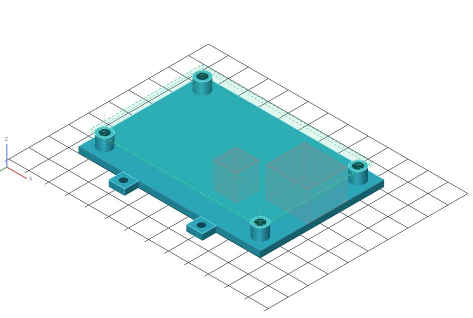

Workflow
Reference
Calibrate
Outline
Holes
Keep-outs
Measurements
Mount
8Preview & export
Export writes exactly what was generated — with the parameters and versions that produced it.

Export mount
Ready
Readiness
Calibrated 32.0 px/mm · caliper source
Outline and 4 holes confirmed
Board thickness measured · 1.60 mm
Generated bracket avoids all keep-outs
0 errors · 0 warnings · model v15
Will be recorded
Units mm
Schema v1
Params a41c92…7f0e
Generator 0.1 draft
Schema v1
Params a41c92…7f0e
Generator 0.1 draft
Format
STEP .step
Solid CAD body — refine downstream in Fusion or other CAD.
STL .stl
Mesh only — print preview and diagnostics, not CAD refinement.
Each format earns support through import evidence. First gate: this STEP measured correct inside Autodesk Fusion.
cm4-carrier-mount-a_v15.step
Write metadata sidecar (.json) — parameters, schema version, calibration provenance, warnings
Export history
No exports yet for this project. Every export is listed here with its parameters and file location.
Reusable board definition
Saving keeps MG-DEV-01 rev B — outline, holes, keep-outs, and provenance — reusable for other mount strategies later.
Validation
Clear
1
Physical fit is unverified
Export ≠ fit. Print and check against the real board before trusting the mount in service.